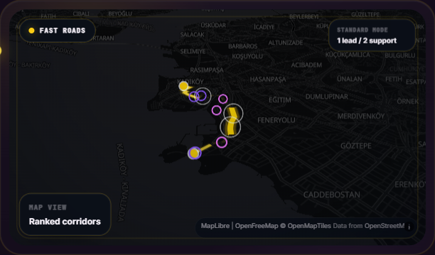
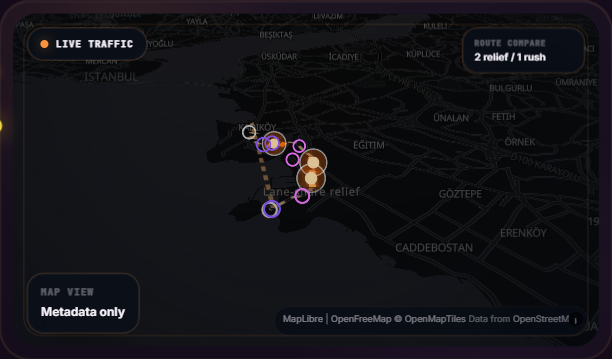
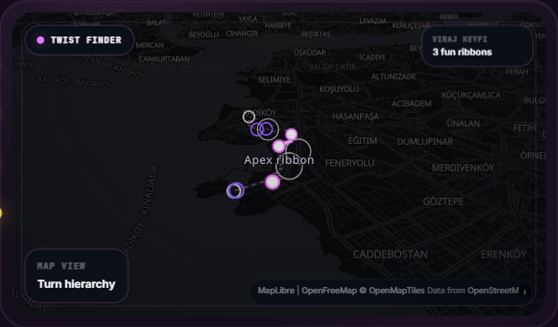

Fast Roads
Lead corridor view
The product opens with a cleaner speed hierarchy, where primary corridors immediately read as the riding line.
Live interactive rendering and snapshots of our routing intelligence.
Every road segment passes through five data layers. The result is a route no generic map app can match.
Real OpenStreetMap basemap with MotoMap bias highlighting the quickest motorcycle-friendly corridors.
Hero corridors that feel instantly faster and cleaner than a generic route view.
Rush pressure appears as cinematic hotspots instead of dry engineering overlays.
Safer mode from the real route preview payload, focused on calmer segments and cleaner exits.
Curvy sections light up with premium route energy instead of looking like GIS output.
Climbs and ridge lines read like a premium terrain story, not a raw topo chart.
Real screen captures from the live MotoMap experience, framed as premium product previews for the site.

The product opens with a cleaner speed hierarchy, where primary corridors immediately read as the riding line.

Rush pockets stay visual and premium, without collapsing the route view into generic heatmap noise.

Curves, apex zones, and supporting ribbons present the route as a premium riding experience instead of raw GIS data.
This block is designed for your GitHub Pages homepage but prefers the MotoMap Docker API running on your own machine. It renders the current route payload, styles the route modes, and refreshes live HERE traffic pressure for the visible corridor.
Real-time MotoMap route payload and live HERE traffic summaries, bridged seamlessly from Docker.
Connecting to local graph...
MotoMap is being shaped as a premium motorcycle navigation product, with a private route engine, live riding layers, and a more cinematic planning experience.
Request Access